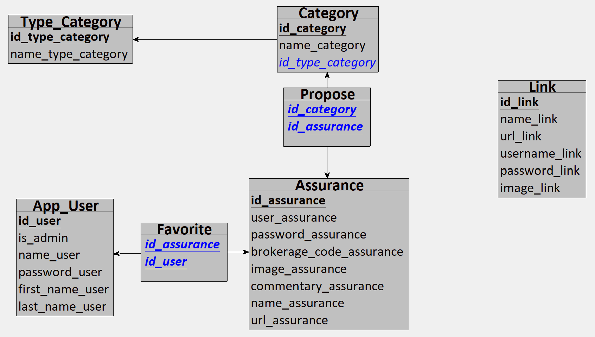
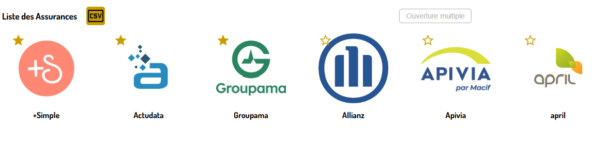

Présentation et évaluation de savoir-faire techniques
Cette partie permet de présenter et évaluer les savoir-faire techniques ...
Créer un schéma/une BdD répondant aux besoins d'une clientèle

Savoir-faire élémentaires : Créer des fonctionnalités pertinentes aux besoins utilisateurs , Créer une base de données et sécuriser les informations qu'elle contient et Structurer le développement d'une application web et coder intelligemment .

Trace 3 : Modèle Logique des Données (MLD) de l'application fait avec LoopingSuite aux fonctionnalités demandées pour l'application j'ai dressé un modèle pour la base de données. Les demandes étaient les suivantes :
- - pouvoir stocker des assurances,
- - pouvoir les filtrer,
- - être redirigé, lors du clic sur une assurance, vers sa page de login avec les informations de
connexion relatives à celle-ci préremplies,
- - et gérer les accès à l'application.
Pour les assuances et les différentes et la fonctionnalité d'être directement connecté à celles-ci lors d'un clic, j'avais donc besoin de l'URL () et des différents accès (user_assurance qui est le nom d'utilisateur, password_assurance étant le mot de passe ainsi que brokerage_code_assurance, un code de courtage supplémentaire présent chez certaines assurances).
Pour ce qui est de la sécurité de l'application et gérer les accès, j'ai donc mettre en place des
utilisateurs avec différents droits. Et concernant la non lisibilité d'informations sensibles de la
base de données, j'ai choisi de

Trace 4 : Aperçu de l'affichage des Assurances dans l'application web
De plus, sachant que
Pour les mêmes raisons, que les utilisateurs sont amenés à cotoier les en général les mêmes
assurances, j'ai décider de mettre en place un système de